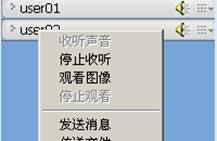

收听/停止收听声音
点击“视音频”菜单，选择“收听声音”或“停止收听”，弹出可以收听或可以停止收听的参会人员列表，选中后，点击“确定”，即可以收听或停止收听参会人员的声音。

图1 选择要收听的用户

图2 选择要停止收听的用户
点击参会人员列表中的喇叭按钮，或在参会人员点击右键，在弹出的菜单中选择“收听声音”或“停止收听”可以收听或停止收听该参会人的声音。

图3 收听或停止收听用户
会议室界面可以调节麦克风与耳机的音量，如下图所示，左侧的为耳机音量，右侧为麦克风音量：
图4 麦克风与耳机的音量调节
观看/停止观看视频
点击“视音频”菜单，选择“观看图像”或“停止观看”，弹出可以观看或可以停止观看的参会人员列表，选中后，点击“确定”，即可观看或停止观看参会人员的视频图像。

图5 选择要观看视频的用户

图6 选择要停止观看的用户
双击击参会人员列表表示参会人员的标题栏，或在参会人员点击右键，在弹出的菜单中选择“观看图像”或“停止观看”可以观看或停止观看该参会人的视频图像。